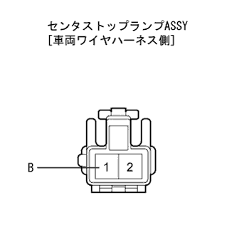

Center Stop Light Assembly On-vehicle Inspection |
| 1. Inspect Center Stop Light Assembly |
Measure the voltage.
Disconnect the center stop light assembly connector.
 |
Using SST (Toyota electrical tester), inspect the voltage between the terminal of the vehicle side wire harness connector and body ground.
| Tester Connection (Terminal Symbol) | Condition | Standard |
|---|---|---|
| 1 (B) - Body ground | Brake pedal depressed → released | Below 1V → 11 to 14V |